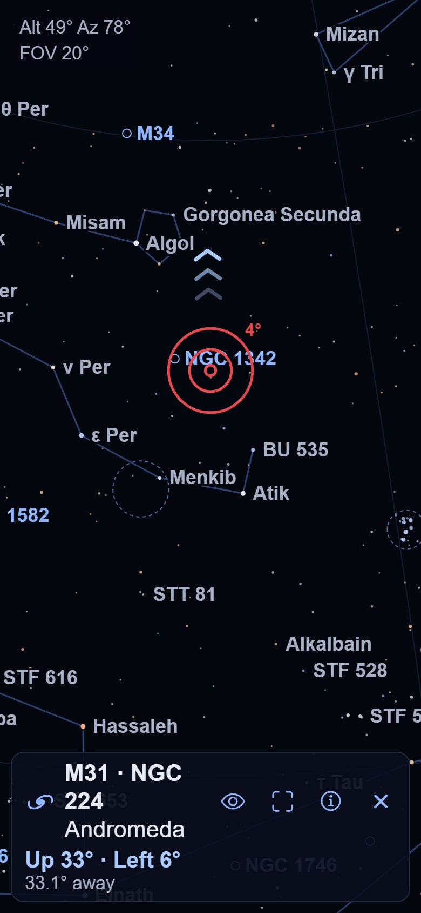

What it does
-
Knows where you point
The phone's camera looks at the sky, finds the stars and works out where the telescope points: plate solving, in your browser, with no internet needed.
-
Follows the telescope
The motion sensors move the map as you move the telescope, and each plate solve corrects them.
-
Guides you there
Pick a target and follow the arrows until it is in the rings, then in your eyepiece.
-
Lists for tonight
Messier, Caldwell, NGC and IC objects, planets, double stars, and what is best right now. Keep your own lists and an observing log.
-
Two phones
One phone on the telescope as the finder, another in your hand as the screen, linked directly.
-
Made for city skies
Designed to work under a bright city sky, with large text you can read at arm's length.
How it works
- Fix your phone to the telescope, with its camera looking at the sky.
- Align once: centre a bright star in the eyepiece and tap.
- Choose a target and follow the arrows.
Best on Android with Chrome. iPhone with Safari works too, with some limits. From the app, install it on your home screen to use it full screen.
Never point your telescope or your phone's camera at the Sun.
About this project
AstroTurboMaxiSolver is a personal project. It was built with vibe coding, describing to an AI what to build, and it is the first project I have made this way. I find it useful at the telescope, so I wanted to share it with other amateur astronomers.
It will be released as open source soon.
It is provided as is, without any warranty. Positions and guidance may be wrong: check them before relying on them.